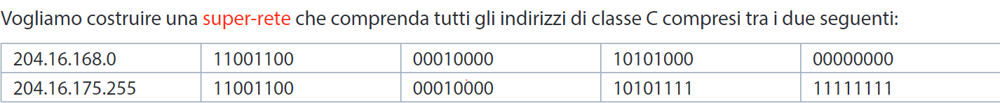
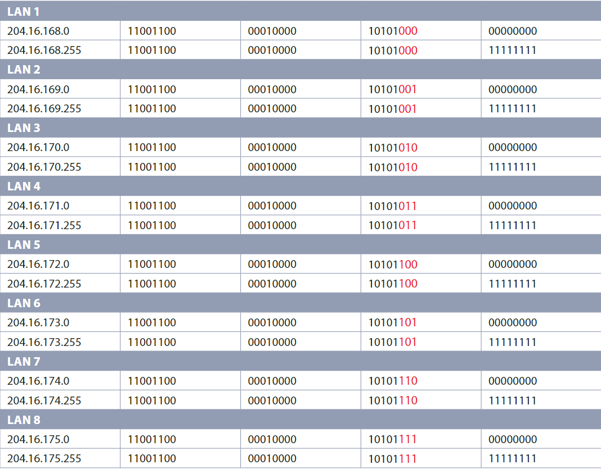
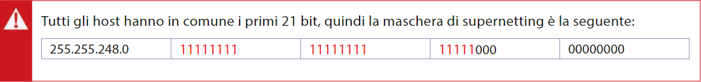

CIDR
il CIDR permette di svincolarsi dal
rigido meccanismo della di-visione
in classi accorpando le reti secondo
le diverse esigenze, in modo da formare
un’unica super-rete (super-netting).
Per poter realizzare le supernetting è
però necessario avere a disposizione
indirizzi contigui e definire una maschera
che selezioni i bit che le due reti hanno
in comune: questa maschera, che viene quindi
utilizzata per identificare il Network-ID,
prende il nome di maschera di supernetting.
Vediamo un esempio:
Vediamo un esempio:

Analizzando il terzo byte osserviamo che
le reti da aggregare sono 8, che vanno dall’
indirizzo 168 fino all’indirizzo 175, comprendendo
tutti gli indirizzi seguenti:


 Indietro
Indietro